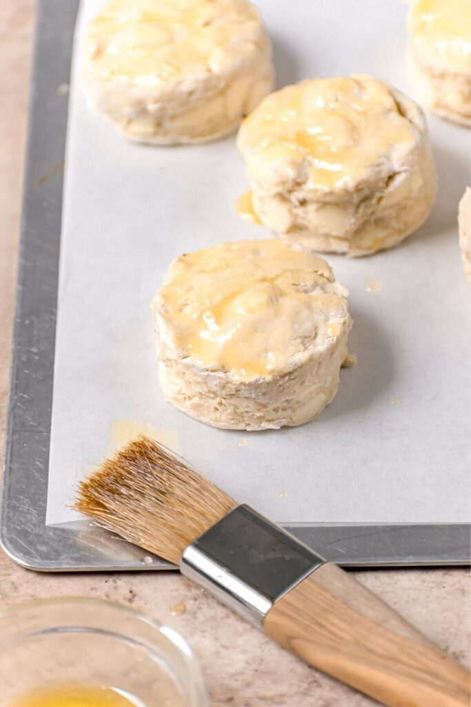

Almond Milk Biscuits

Description
Fluffy almond milk biscuits that can be made completely dairy free/vegan. I found a similar recipe online years ago and have just modified it a bunch.
Ingredients
- 1 cup - unsweetened almond milk
- 1 tbsp - lemon juice
- 2 cups - all-purpose flour
- 1 tbsp - baking powder
- 1/2 tsp - baking soda
- 3/4 tsp - salt
- 4 tbsp - butter (optional)
Steps
- Preheat oven to 450 degrees and add lemon juice to almond milk. Set aside.
- In a bowl, whisk together dry ingredients.
- Add cold butter and combine till only small pieces remain.
- Make a well in dry ingredients and, using a wooden spoon, stir gently while pouring in almond milk, 1/4 cup at a time. Stir until slightly combined. Will be sticky.
- Turn onto lightly floured surface, dust top with a bit of flour and very gently turn dough over on itself 5-6 times.
- Use 1 inch thick dough cutter and push straight down through dough, twist.
- Place biscuits on oiled pan or baking sheet.
- Bake for 10-15 minutes or until fluffy and slightly golden brown.